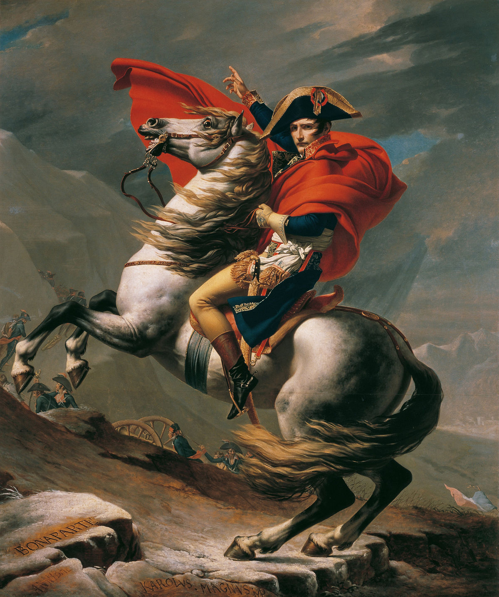
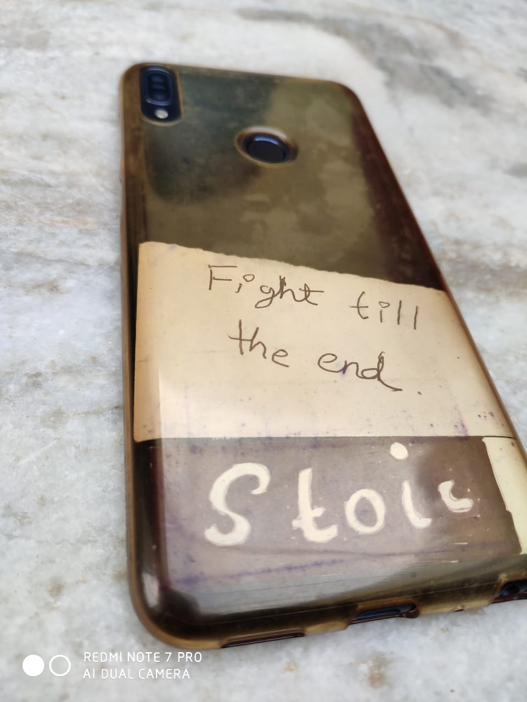
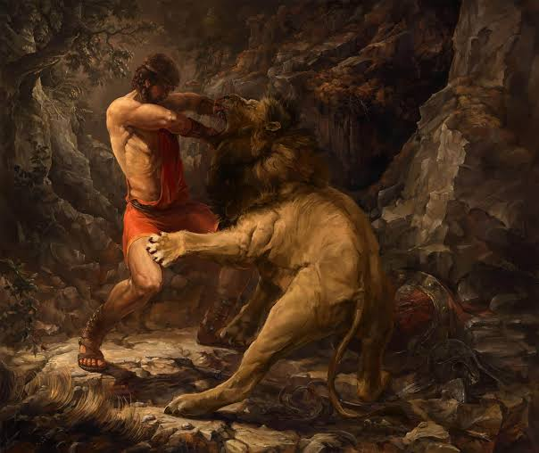
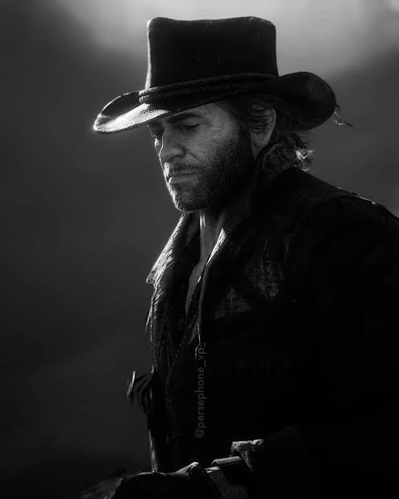
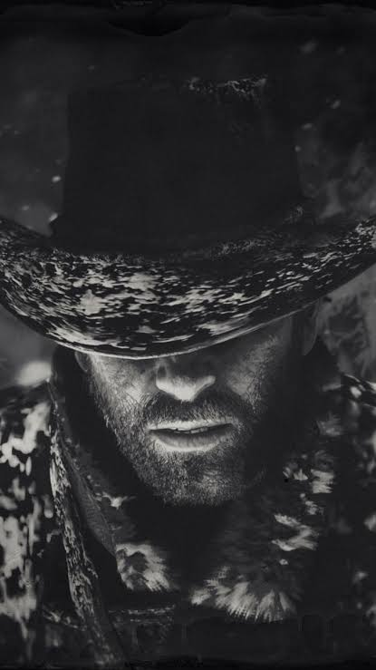
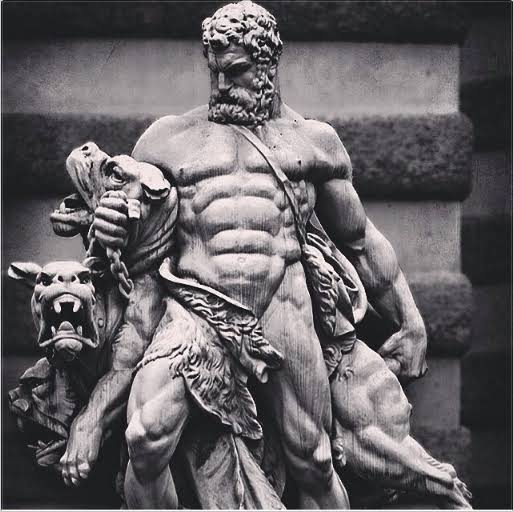
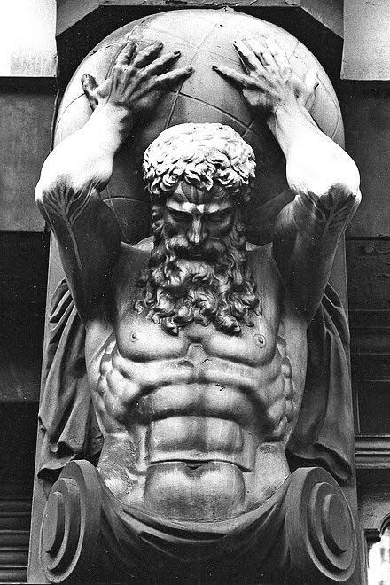
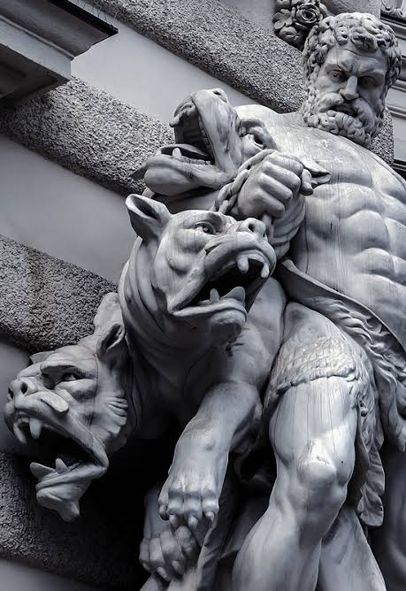

What is Masculinity?
Masculinity is the set of qualities and characteristics typically associated with men, such as strength, courage, and assertiveness.
GoalCast
The Importance of Masculinity
Back cover of my mobile.& "The Stoic philosopher understands that his inner nature is not under our control, but that our actions are. We may not be able to control our circumstances in life, but we can control how we respond to them." - Ryan Holiday
Rolling Dice
Beard
"Beards are not a trend, they are a tradition. They are not a fashion statement, they are a life choice. They are not an accessory, they are a part of who we are." - Unknown..
Sparta
The Nemean lion
Hercules battled the Nemean Lion, a fierce creature with impenetrable skin, and eventually strangled it to death with his bare hands, showcasing his legendary strength and bravery.
Al Pacino "Inches" Speech
Serene
"The secret of happiness, you see, is not found in seeking more, but in developing the capacity to enjoy less." For Socrates.
 Stoicism - Courage , Wisdom , Temperance
"The secret of happiness, you see, is not found in seeking more, but in developing the capacity to enjoy less." For Socrates.
  Inspiring Masculine Role Models
Here are some examples of men who embody positive aspects of masculinity:
- Winston Churchill
- Nelson Mandela
- Elon Musk
- Dwayne "The Rock" Johnson